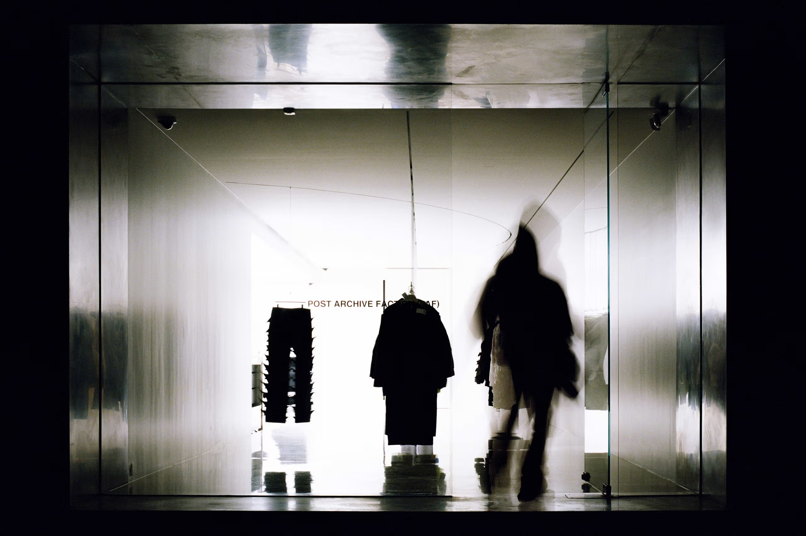

Post Archive Faction
POST ARCHIVE FACTION thrives in the fringes of fashion, uniting avant-garde streetwear with futuristic outerwear. Founded in 2018 by Dongjoon Lim and Sookyo Jeong, the South Korean brand follows an experimental process to craft its pieces; deconstructing and reconstructing elements to reach a garments final form.

^Post Archive Faction store^